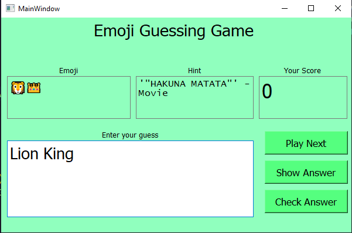
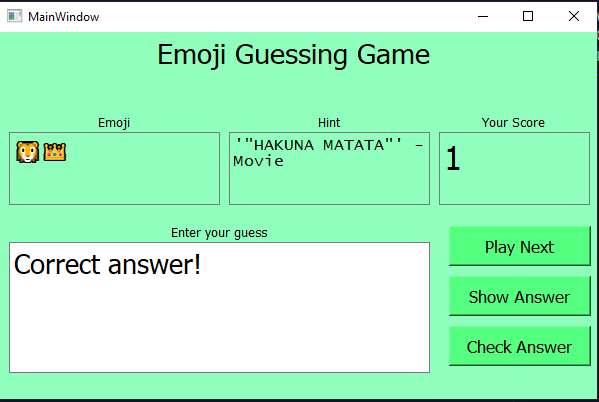
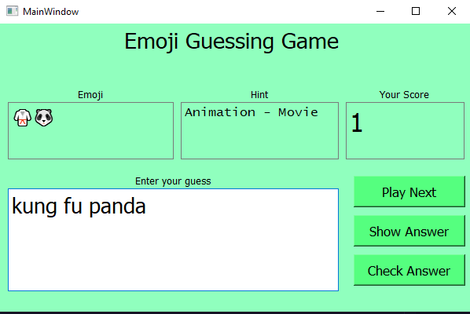

Emoji Quiz Game



Project Description
The Emoji Quiz Game is an interactive desktop application built with PyQt5, designed to entertain and challenge users by testing their ability to interpret emojis. This fun and educational game presents users with emoji hints and prompts them to guess the correct word or phrase represented by the emojis. The game keeps track of the user's score, providing immediate feedback on their responses and encouraging continuous play with randomly selected emoji hints.
Features
-
User Interface:
- A clean and intuitive GUI created using PyQt5 and designed in Qt Designer (
emojiGameGui.ui). - Displays emoji hints, user input fields, and current score.
- Buttons for submitting answers, revealing correct answers, and moving to the next question.
- A clean and intuitive GUI created using PyQt5 and designed in Qt Designer (
-
Game Mechanics:
- Randomly selects emoji hints from a CSV file (
data.csv) containing emojis, hints, and correct answers. - Allows users to input their guess and receive instant feedback.
- Updates and displays the user's score based on correct or incorrect answers.
- Provides the option to reveal the correct answer if the user is stuck.
- Randomly selects emoji hints from a CSV file (
-
Interactivity:
- Encourages user engagement through immediate feedback and score tracking.
- Simple and user-friendly controls for ease of use by players of all ages.
Technical Details
-
Languages and Libraries:
- Python for the core application logic.
- PyQt5 for the graphical user interface.
- Pandas for reading and managing emoji data from the CSV file.
- NumPy and random for efficient data handling and random selection.
-
CSV Data File (
data.csv):- Contains columns for emojis (
emoji), hints (hint), and answers (answer).
- Contains columns for emojis (
-
GUI Design:
- Built using Qt Designer and loaded into the application using
uic.loadUi.
- Built using Qt Designer and loaded into the application using
How It Works
-
Initialization:
- The application loads the user interface and initializes the game state.
- The first emoji hint is displayed along with the current score (starting at zero).
-
Gameplay:
- Users type their guess into the text field and submit it by clicking the "Submit" button.
- The game checks the response against the correct answer and updates the score accordingly.
- Feedback is provided in the text field, indicating whether the guess was correct or incorrect.
- Users can click the "Next" button to proceed to a new emoji hint or the "Show Answer" button to reveal the correct answer if needed.
-
Score Tracking:
- The score is displayed and updated in real-time, motivating users to improve with each round.
Usage
- Suitable for both educational purposes and casual entertainment.
- Can be easily extended with more emojis and hints by updating the CSV file.
GitHub Link
Check out the code and contribute on GitHub:
Emoji Quiz Game Repository